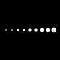

This page tests the fix for bug 597 for Processing.js
If the canvas and image below are identical, the test has passed.

// Test by Andor Salga
import processing.opengl.*;
void setup(){
size(100,100,OPENGL);
}
void draw(){
background(0);
stroke(255);
translate(0, height/2, 0);
for(int i=0; i < 10; i++){
strokeWeight(i);
point(i* 10, 0, 0);
}
}